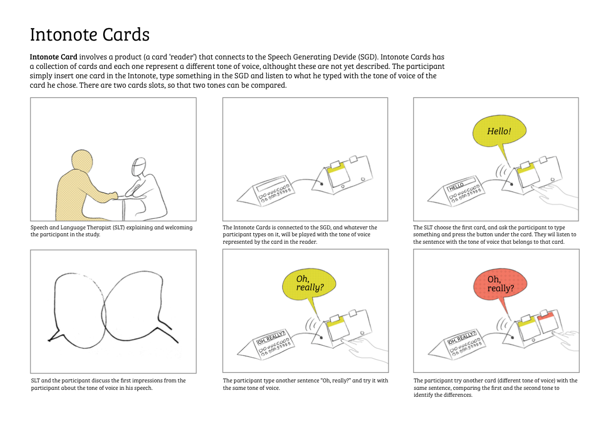
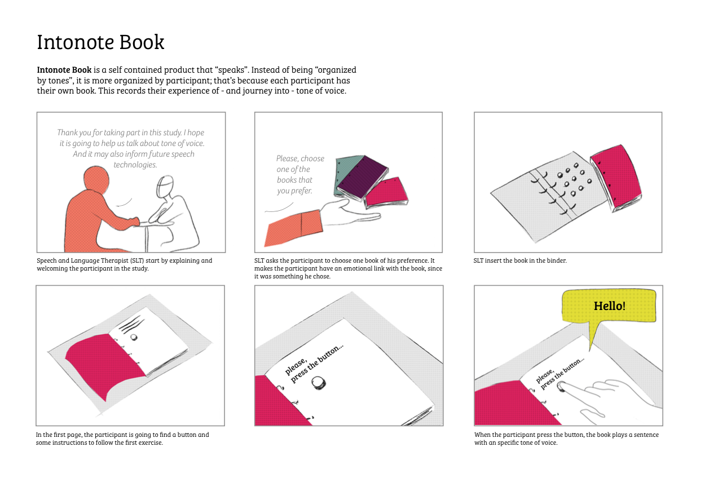
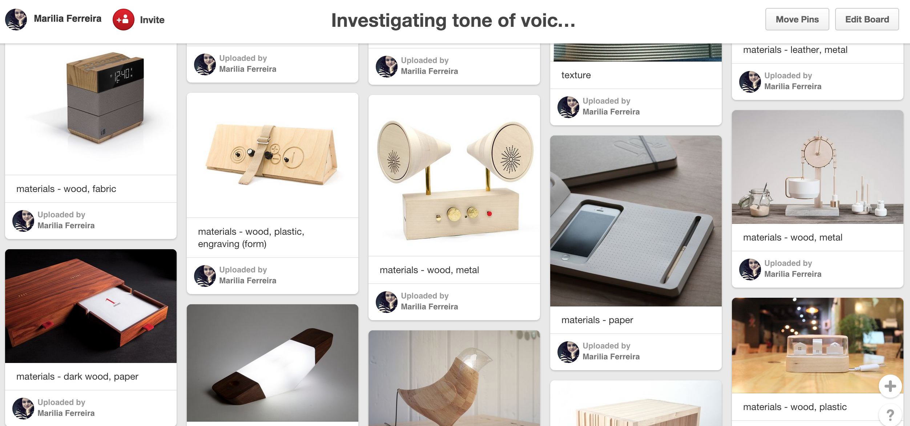
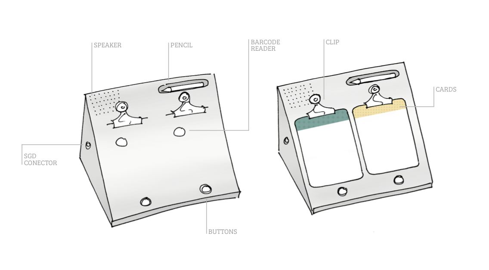
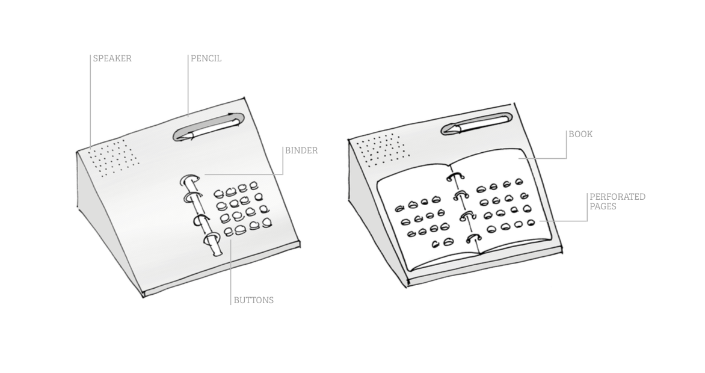
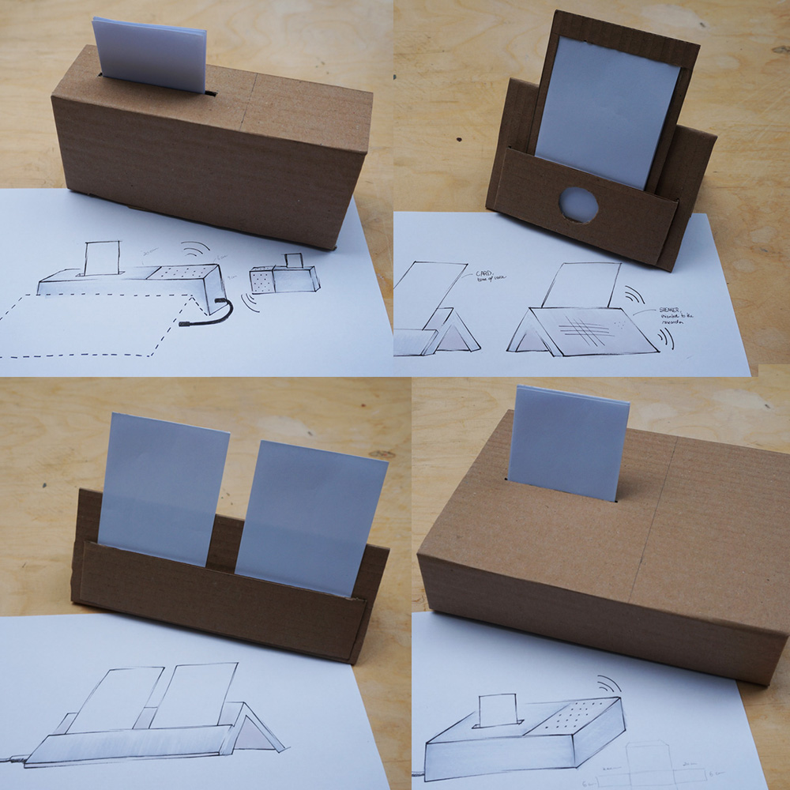
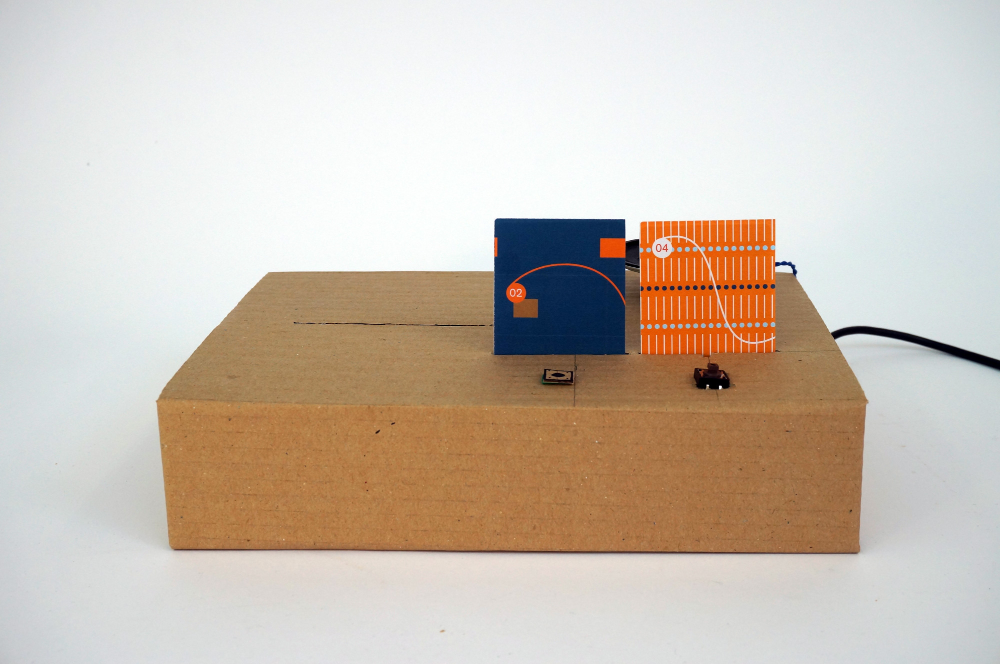
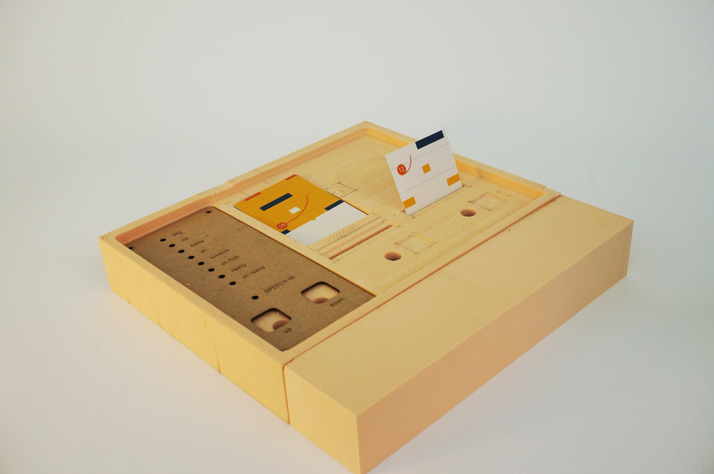
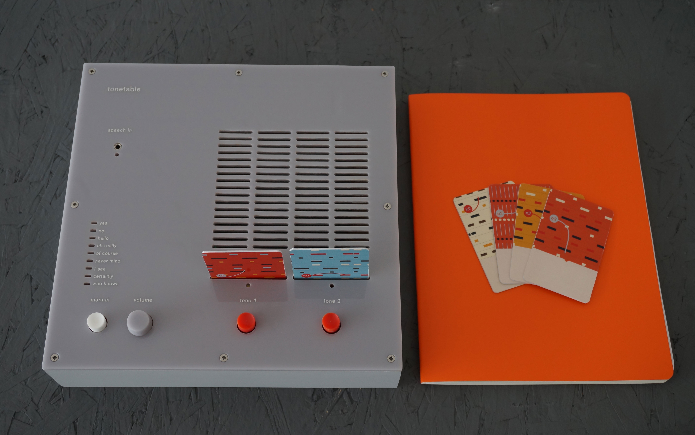

Tonetable brings tone of voice for people who for any reason can't speak. Tonetable is a device for AAC researchers use it with their participants, to try differents tone of voice with or without a Speech Generating Device.
I worked in this project as a research assistant. This project was leaded by Professor Dr. Graham Pullin (ex-IDEO studio head of design in London) who is now a researcher and professor at University of Dundee. We also had Shannon Hennig (Language Therapist and AAC researcher in Australia) as a partner in this research.
Since Professor Graham had previous projects in the same field, he has wide information about the users. With this documentation we started building the scenarios for this project. We brainstormed and made two possible cases:
1. The first one, was a product that worked as a SGD (Speech Generating Device), which you could choose the tone of voice throught the cards.
2. The second one, was a book about experimentation, where you should follow some lessons and interact with it to get the tones of voice.
 After developing these scenarios, we presented them to Shannon Hennig, who works in Australia as a language Therapist and researcher. She helped us with thoughts on both scenarios and her thoughts were fundamental for our work - acted as a north star to help us find the best solution.
After gathering lots of information from both Professor Graham and Shennon, it was time to step back and look for some visual inspiration as well.
To accomplished this task, we created a board on Pinterest to register this finding and keep remembering of them.
*Offline inspiration*: we went to Tayside Recycling Centre to find different pieces of inspiration (I suggest every designer do this one hour or another).
One inspiration that stick in our heads (for so many good reasons) was Dieter Rams. Our work was somehow related with his, in the sense that we had an piece of product design that was about "sound". We serched some cues from the design language of Braun––hardly an original source, but appropriate in this case as we try to balance attractiveness with a sense of scientific rigour.
After lots of inputs, I brainstormed some ideias and drew them on paper to present it. Some of them were better than others, some took a very different approach (i.e. one of them was inspired by Scrabble game). Then, after discussing them with Professor Graham, I took the lead to make the first prototyping iterations, using cardboard.
  After we discuss which prototype were more prominent in terms of form, we chose one to make it at least functional. We decided to use Arduino with MP3 shield. In this stage, we used some audio files from the Cereproc project [LINK] from Edinburgh - which is a Scottish company, based in Edinburgh, the home of advanced speech synthesis research. With those files, we could test different tones of voice for the same sentence.
We also built a prototype using foam to test more details in the product.
 Do you want to hear more about it? Contact me: mariliaferreiraa@gmail.com